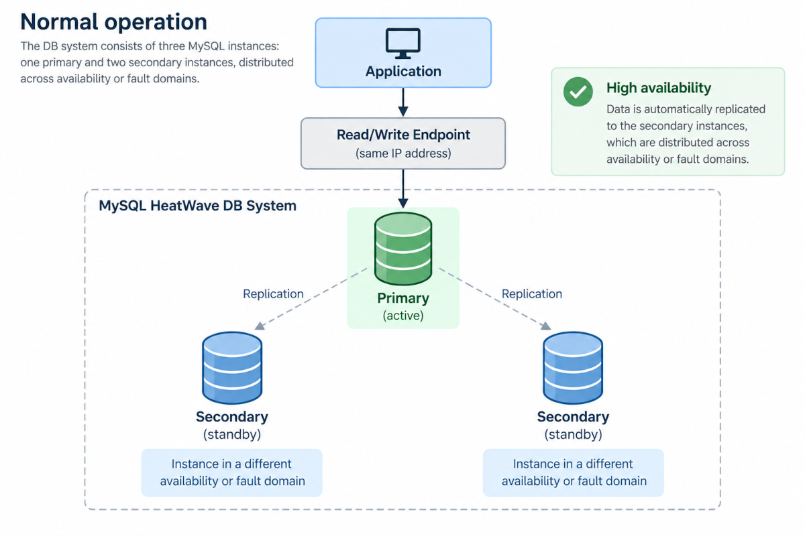
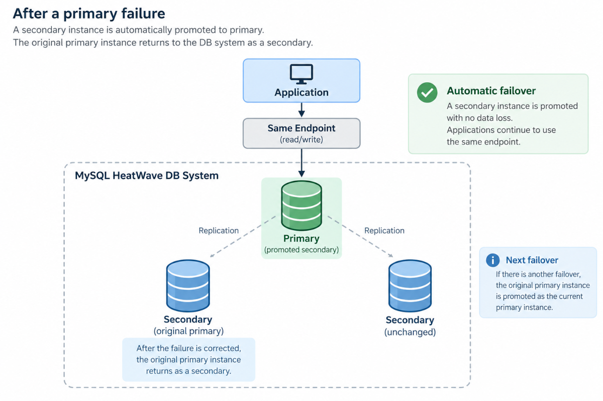
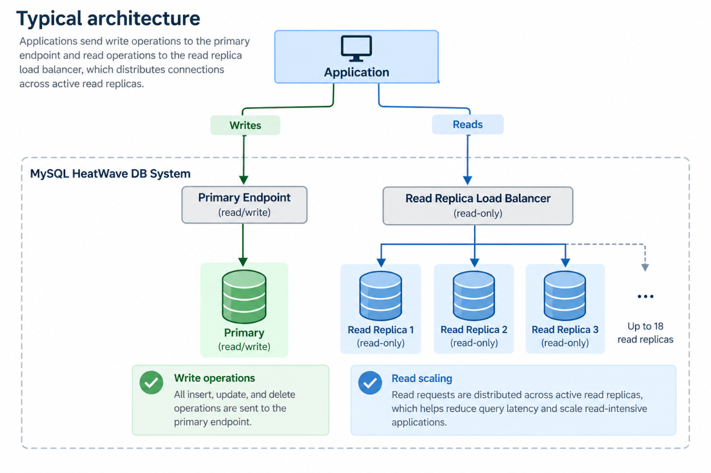
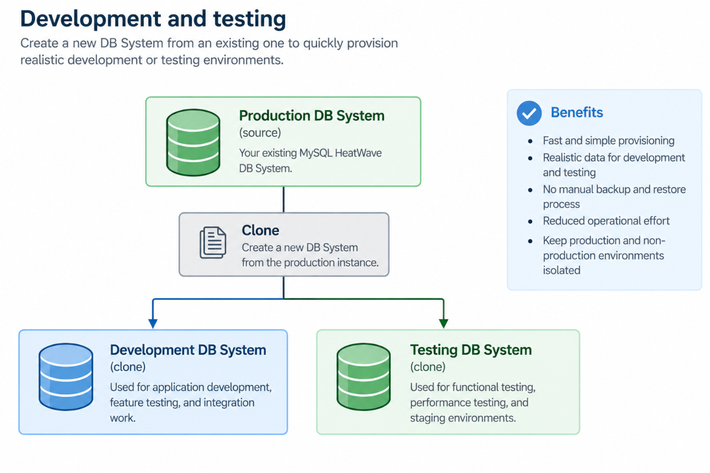
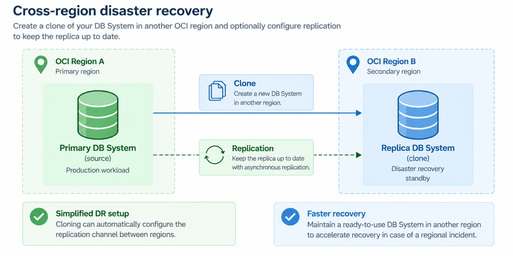
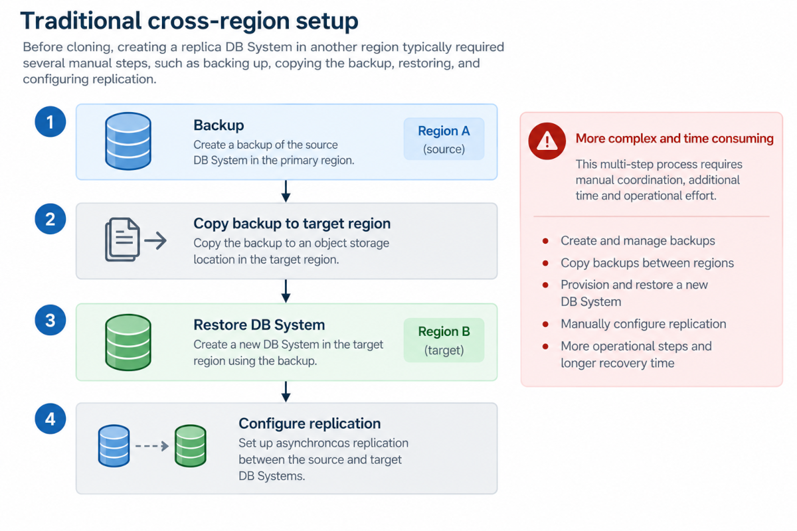

OCI Open Source Services Update
MySQL HeatWave Core Capabilities
MySQL HeatWave is a fully managed MySQL cloud service built on MySQL Enterprise Edition. Beyond HeatWave analytics, AI, and Lakehouse capabilities, it provides a strong platform for traditional OLTP workloads, with built-in automation, high availability, read scaling, enterprise security, and simplified database cloning. (documentation)
For this first edition of the OCI Open Source Services Update, we highlight five capabilities particularly relevant to transactional MySQL workloads.
Autopilot Indexing
Workload-aware index recommendations for OLTP
Choosing the right indexes is essential for OLTP performance, but finding the right balance can be difficult. Too few indexes can result in slow queries, while too many increase storage consumption and add overhead to INSERT, UPDATE, and DELETE operations.
MySQL Autopilot Indexing analyzes SQL workload history collected in Performance Schema and recommends secondary indexes to create or remove. It considers both query performance and index-maintenance cost. (documentation)
For each recommendation, Autopilot Indexing can provide:
- Expected workload performance improvement
- Storage impact
- Index creation time
- DDL statements
- Explanation of the recommendation
- Estimated performance improvement for the most affected queries
This helps DBAs make evidence-based indexing decisions instead of relying only on manual analysis or guesswork.
Example
Analyze all user schemas:
CALL sys.autopilot_index_advisor(NULL);Or analyze a specific schema:
CALL sys.autopilot_index_advisor(
JSON_OBJECT(
'target_schema',
JSON_ARRAY('sakila')
)
);The advisor can then recommend indexes to create or remove and report their expected performance and storage impact. (documentation)
Resources
High Availability with Automatic Failover
Built-in resilience for business-critical MySQL workloads
A highly available MySQL HeatWave DB System consists of three MySQL instances: one primary and two secondary instances.
Depending on the OCI region and network configuration, the instances are distributed across different availability domains or fault domains, protecting the database against infrastructure failures. (documentation)
If the primary instance fails, MySQL HeatWave automatically promotes one of the secondary instances to become the new primary. The service provides zero data loss and minimal downtime during failover. (documentation)
Applications continue to use the same read/write endpoint: the IP address of the DB System endpoint does not change when the primary moves to another instance. (documentation)
Why it matters
High Availability removes much of the operational complexity traditionally associated with running a resilient MySQL architecture.
Normal operation

After a primary failure

Failover, instance promotion, and recovery of the failed instance are managed by the service. (documentation)
Resources
Read Scaling with Managed Read Replicas
Scale read-intensive applications without scaling the primary database
For applications that generate substantially more reads than writes, sending every query to the primary database can eventually become a scalability bottleneck.
MySQL HeatWave Read Replicas provide read-only copies of the primary MySQL instance that can be used to offload read-intensive workloads and reduce query latency. Updates from the primary are replicated asynchronously to the replicas. (documentation)
Each replica has its own endpoint, allowing an application to target an individual replica when required.
MySQL HeatWave also simplifies connection management: when the first read replica is created, the service automatically creates a Read Replica Load Balancer. All replicas belonging to the DB System are automatically registered as backends, and traffic is distributed among active replicas.
Typical architecture

This is particularly useful for:
- Read-heavy web applications
- Reporting workloads
- APIs with high read concurrency
- Product catalogs
- Dashboards
- Applications where read capacity needs to scale independently of write capacity
Resources
Enterprise-Grade Security Built In
MySQL Enterprise Edition capabilities as a managed service
The MySQL DB System used by MySQL HeatWave runs MySQL Enterprise Edition, bringing enterprise security capabilities directly into the managed cloud service. (documentation)
Security capabilities include multiple complementary layers.
Encryption at rest protects DB System storage and backups. OCI-managed encryption keys are used by default, while organizations that require greater control can use customer-managed keys stored in OCI Vault. (documentation)
Encryption in transit protects connections between applications and MySQL using TLS. Encryption can also be made mandatory for individual MySQL users.
For example:
CREATE USER 'app_user'10.0.1.%'
IDENTIFIED BY 'S€cur3P@s5W0rd&'
REQUIRE SSL;Data masking provides SQL functions that can hide or transform sensitive information such as email addresses, payment-card numbers, telephone numbers, and other personally identifiable data. (documentation)
MySQL Enterprise Audit can record database activity including connections, disconnections, and access to databases and tables, helping organizations build database audit trails. (documentation)
OCI Identity and Access Management (IAM) controls access to MySQL HeatWave cloud resources through policies and permissions, allowing administrators to apply least-privilege access at the tenancy and compartment level. (documentation)
Together, these capabilities provide security controls at the cloud infrastructure, database, identity, connection, and data levels.
Resources
Fast Cloning for Development, Testing, and Disaster Recovery
Create a new DB System directly from an existing database
MySQL HeatWave cloning provides a streamlined way to create a new DB System directly from an existing one, without requiring users to manually perform the traditional backup-and-restore workflow.
A DB System can be cloned within the same OCI region or into another region. During the clone operation, MySQL HeatWave can also optionally configure a replication channel between the source DB System and the clone. (documentation)
This makes cloning useful for several scenarios.
Development and testing
Teams can quickly provision a separate database based on an existing DB System:

This simplifies the creation of realistic development or testing environments compared with manually coordinating backups and restores.
Cross-region disaster recovery
The same mechanism can be used to create a DB System in another OCI region:

For cross-region deployments, the cloning workflow can optionally establish the replication channel during provisioning.
Previously, creating this type of replica could require several separate operations:

The cloning workflow brings these steps together into a much simpler operation, reducing the effort required to provision replica DB Systems for disaster recovery and other operational scenarios.
Resources
Summary
MySQL HeatWave: the OLTP Picture
Taken together, these capabilities address several of the core requirements of running production MySQL applications in the cloud:
| Requirement | MySQL HeatWave capability |
|---|---|
| Optimize transactional performance | Autopilot Indexing |
| Protect against instance or infrastructure failure | High Availability |
| Scale read-intensive applications | Managed Read Replicas |
| Protect sensitive and regulated data | MySQL Enterprise Security |
| Provision copies and prepare for regional recovery | DB System Cloning |
The result is a managed MySQL platform where many traditionally complex DBA and infrastructure tasks, like index analysis, failover, replica management, security integration, and database provisioning, are provided directly by the service.